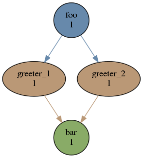
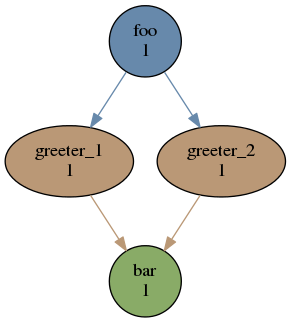

|
|
This section provides a hands-on tutorial introduction to basic cylc suite preparation and control. A number of features are not yet touched on by the tutorial examples, however, so please also read the rest of the User Guide.
Some global parameters affecting cylc’s behaviour are defined in a site config file, and can be customized per user in user config files. For example, to choose the text editor invoked by cylc on suite definitions:
Cylc has command line (CLI) and graphical (GUI) user interfaces. To get access to them you just need the cylc bin directory in your shell search path:
The command line interface is unified under a single top level cylc command that provides access to many sub-commands and their help documentation.
The cylc GUI covers the same functionality as the CLI with the addition of live suite monitoring capability, and it is intended to be easier to use without expert knowledge. It can start and stop suites, or connect to suites that are already running; in either case, shutting down the GUI does not have affect the suite itself.
Clicking on a suite in the summary GUI, shown in Figure 15, opens a gcylc instance for it.
Cylc suites are defined by extended-INI format suite.rc files (the main file format extension is section nesting). These reside in suite definition directories that may also contain a bin directory and any other suite-related files.
Suite registration associates a name with a suite definition directory, in a simple database. Cylc commands that parse suite definition files can take the file path or the suite name as input; commands that interact with running suites have to target the suite by name.
At registration time a random string of characters is written to a file called passphrase in the suite definition directory. At run time any contact from cylc client programs (running tasks, user commands, the cylc GUI) must use the same passphrase to authenticate with the running suite. This prevents unauthorized users interfering in your suites (network communication between running processes is not subject to Unix user account permissions). Local tasks and user commands on the suite host automatically use the passphrase in the suite definition directory. For remote tasks and commands, however, the passphrase must be installed appropriately on the remote account - see Section 7.16 below.
Run the following command to import cylc’s example suites to a chosen directory location and register them for use under the examples name group:
(first check that $TMPDIR is defined in your environment, or else use a different location). List the newly registered tutorial suites using the cylc print command:
See cylc db print --help for other display options. The tree-form display shows how hierarchical suite names can be used to organize related suites nicely (suite names do not have to be related to their source directory paths, although they are in this case):
Rename (re-register) the tutorial suites to make their names a bit shorter:
Suite definitions can be validated against the suite.rc file format specification to detect many types of error without running the suite.
Here’s the traditional Hello World program rendered as a cylc suite:
Cylc suites feature a clean separation of scheduling configuration, which determines when tasks are ready to run; and runtime configuration, which determines what to run (and where and how to run it) when a task is ready. In this example the [scheduling] section defines a single task called hello that triggers immediately when the suite starts up. When the task finishes the suite shuts down. That this is a dependency graph will be more obvious when more tasks are added. Under the [runtime] section the command scripting item defines a simple inlined implementation for hello: it sleeps for ten seconds, then prints Hello World!, and exits. This ends up in a job script generated by cylc to encapsulate the task (below) and, thanks to some some defaults designed to allow quick prototyping of new suites, it is submitted to run as a background job on the suite host. In fact cylc even provides a default task implementation that makes the entire [runtime] section technically optional:
(the resulting dummy task just prints out some identifying information and exits).
The text editor invoked by cylc on suite definitions is determined by cylc site and user config files, as shown above in Section 7.2. Check that you have renamed the tutorial examples suites as described just above and open the Hello World suite definition in your text editor:
Alternatively, start gcylc on the suite,
and choose Suite → Edit from the menu.
The editor will be invoked from the suite definition directory for easy access to other suite files (in this case there are none). There are syntax highlighting control files for several text editors under /path/to/cylc/conf/; see in-file comments for installation instructions.
Run the suite at the terminal with the cylc run command:
The --no-detach option tells cylc not to daemonize so that output is printed to the terminal. When the task is ready to run cylc generates a special job script to run it. The command line used to submit the job script, which depends on the task’s job submission method and host machine, is printed to suite stdout. Messages subsequently received from the running task are also printed. More detailed information is written, time-stamped, to a suite log. The suite automatically shuts down when and if all tasks have succeeded.
The cylc GUI can start and stop suites, or (re)connect to suites that are already running: gcylc
use the tool bar Play button, or the Control → Run menu item, to run the suite again. You may want to alter the suite definition slightly to make the task take longer to run. Try right-clicking on the hello task to view its output logs. The relative merits of the three suite views - dot, tree, and graph - will be more apparent later when we have more tasks. Closing the GUI does not affect the suite itself.
Suites that are currently running can be detected with command line or GUI tools:
At run time, task instances are identified by name, which is determined entirely by the suite definition, and a cycle time or integer tag:
Non-cycling tasks usually just have the tag 1, but this still has to be used to target the task instance with cylc commands.
Task job scripts are generated by cylc to wrap the task implementation specified in the suite definition (environment, command scripting, etc.) in error trapping code and cylc messaging calls to report task progress back to the suite. Job scripts are saved to the suite run directory - the location can be seen in the job submission commands printed to suite stdout. They can be viewed by right-clicking on the task in the cylc GUI, or printed to the terminal:
Or a new job script can be generated on the fly for inspection,
Take a look at the job script generated for hello.1 during the suite run above. The command scripting should be clearly visible toward the bottom of the file.
The hello task in the first tutorial suite defaults to running as a background job on the suite host. To submit it to the Unix at scheduler instead, configure its job submission settings as in tut.oneoff.jobsub:
If you run the suite (first check that the at daemon atd is running on the suite host) a different, at-specific job submission command will be used and printed to stdout:
Cylc supports a number of different job submission methods. Tasks submitted to external batch queuing systems like at, PBS, SLURM, or loadleveler, will be displayed as submitted in cylc until they actually start executing.
If the --no-detach option is not used, suite stdout and stderr will be directed to the suite run directory along with the time-stamped suite log file, and task job scripts and job logs (task stdout and stderr). The default suite run directory location is $HOME/cylc-run:
The suite run database, suite environment file, suite state files, and task status files are used internally by cylc. Tasks execute in sub-directories of work/, which are automatically deleted if empty when the task finishes. The suite share/ directory is made available to all tasks (by $CYLC_SUITE_SHARE_DIR) as a common share space. Job log filenames have the task try number appended (here just 1) - this increments from 1 if a task is configured to retry on failure, to avoid overwriting the logs from previous tries.
The top level run directory location can be changed in site and user config files if necessary, and the suite share and work locations can be configured separately because of the potentially larger disk space requirement.
Task job logs can be viewed by right-clicking on tasks in the gcylc GUI (so long as the task proxy is live in the suite), manually accessed from the log directory (of course), or printed to the terminal with the cylc log command:
For a more sophisticated web-based interface to suite and task logs, see Rose in Section 14.
The hello task in the first two tutorial suites defaults to running on the suite host. To make it run on a remote host instead change its runtime configuration as in tut.oneoff.remote:
For remote task hosting to work several requirements must be satisfied:
If your username is different on the task host the [[[remote]]] section also supports an owner=username item, or your $HOME/.ssh/config file can be configured for username translation.
If you configure a task host according to the requirements above and run the suite again you’ll see that the job submission command printed to suite stdout is now considerably more complicated. That’s because it has to create remote log directories, source login scripts to ensure cylc is visible on the remote host, pipe the task job script over, and submit it to run there by the configured job submission method:
Remote task job logs are saved to the suite run directory on the task host, not on the suite host, although they can be retrieved by right-clicking on the task in the GUI. Rose (section 14.1) provides a task event handler to pull logs back to the suite host.
To make a second task called goodbye trigger after hello finishes successfully, return to the original example, tut.oneoff.basic, and change the suite graph as in tut.oneoff.goodbye:
or to trigger it at the same time as hello,
and configure the new task’s behaviour under [runtime]:
Run tut.oneoff.goodbye and check the output from the new task:
Task names in the graph string can be qualified with a state indicator to trigger off task states other than success:
A common use of this is to automate recovery from known modes of failure:
i.e. if task goodbye fails, trigger another task that (presumably) really says goodbye.
Failure triggering generally requires use of suicide triggers as well, to remove the recovery task if it isn’t required (otherwise it would hang about indefinitely in the waiting state):
This means if goodbye fails, trigger really_goodbye; and otherwise, if goodbye succeeds, remove really_goodbye from the suite.
Try running tut.oneoff.suicide, which also configures the hello task’s runtime to make it fail, to see how this works.
The [runtime] section is actually a multiple inheritance hierarchy. Each subsection is a namespace that represents a task, or if it inherits from other namespaces, a family. This allows common configuration to be factored out of related tasks very efficiently.
The [root] namespace is at the root of all runtime hierarchies. It provides defaults for all tasks in the suite. Here both tasks inherit command scripting from root, which they customize with different values of the environment variable $GREETING. Note that inheritance from root is implicit; from other parents an explicit inherit = PARENT is required, as shown below.
Task families defined by runtime inheritance can also be used as shorthand in graph trigger expressions. To see this, consider two “greeter” tasks that trigger off another task foo,
If we put the common greeting functionality of greeter_1 and greeter_2 into a special GREETERS family, the graph can be expressed more efficiently like this:
i.e. if foo succeeds, trigger all members of GREETERS at once. Here’s the full suite with runtime hierarchy shown:
Verbose validation shows the family member substitution done when the suite definition is parsed:
title = "Triggering a family of tasks"
[scheduling]
[[dependencies]]
graph = "foo => GREETERS"
[runtime]
[[root]]
pre-command scripting = "sleep 10"
[[foo]]
# empty (creates a dummy task)
[[GREETERS]]
command scripting = "echo $GREETING World!"
[[greeter_1]]
inherit = GREETERS
[[[environment]]]
GREETING = Hello
[[greeter_2]]
inherit = GREETERS
[[[environment]]]
GREETING = Goodbye
Experiment with the tut.oneoff.ftrigger1 suite to see how this works.
Tasks (or families) can also trigger off other families, but in this case we need to specify what the trigger means in terms of the upstream family members. Here’s how to trigger another task bar if all members of GREETERS succeed:
Verbose validation in this case reports:
Cylc ignores family member qualifiers like succeed-all on the right side of a trigger arrow, where they don’t make sense, to allow the two graph lines above to be combined in simple cases:
Any task triggering status qualified by -all or -any, for the members, can be used with a family trigger. For example, here’s how to trigger bar if all members of GREETERS finish (succeed or fail) and any of them them succeed:
(use of GREETERS:succeed-any by itself here would trigger bar as soon as any one member of GREETERS completed successfully). Verbose validation now begins to show how family triggers can simplify complex graphs, even for this tiny two-member family:
Experiment with tut.oneoff.ftrigger2 to see how this works.
You can style dependency graphs with an optional [visualization] section, as shown in tut.oneoff.ftrigger2:
To display the graph in an interactive viewer,
It should look like Figure 16 (with the GREETERS family node expanded on the right).
Graph styling can be applied to entire families at once, and custom “node groups” can also be defined for non-family groups.
The tasks in our examples so far have all had inlined implementation, in the suite definition, but real tasks often need to call external commands, scripts, or executables. To try this, let’s return to the basic Hello World suite and cut the implementation of the task hello out to a file hello.sh in the suite bin directory:
Make the task script executable, and change the hello task runtime section to invoke it:
If you run the suite now the new greeting from the external task script should appear in the hello task stdout log. This works because cylc automatically adds the suite bin directory to $PATH in the environment passed to tasks via their job scripts. To execute scripts (etc.) located elsewhere you can refer to the file by its full file path, or set $PATH appropriately yourself (this could be done via $HOME/.profile, which is sourced at the top of the task job script, or in the suite definition itself).
Note the use of set -e above to make the script abort on error. This allows the error trapping code in the task job script to automatically detect unforeseen errors.
So far we’ve considered non-cycling tasks, which finish without spawning a successor. Cycling tasks have an associated cycle time, and they spawn a successor at their next cycle time as soon as they are submitted to run (so that successive instances of a task can run in parallel if the opportunity arises and their dependencies allow it and).
Open the tut.cycling.one suite:
The difference between cycling and non-cycling suites is all in the [scheduling] section, so we will leave the [runtime] section alone for now (this will result in cycling dummy tasks). Note that the graph is now defined under an Hours Of The Day cycling section - each task in the graph section will have a succession of cycle times of ending in 00 or 12 hours, between specified initial and final cycle times (or indefinitely, if no final cycle time is given), as shown in Figure 17.
title = "Two cycling tasks, no inter-cycle dependence"
[scheduling]
initial cycle time = 2013080800
final cycle time = 2013081200
[[dependencies]]
[[[0,12]]] # 00 and 12 hours every day
graph = "foo => bar"
[visualization]
initial cycle time = 2013080800
final cycle time = 2013080900
[[node attributes]]
foo = "color=red"
bar = "color=blue"
If you run this suite instances of foo will spawn in parallel out to the suite runahead limit, and each bar will trigger off the corresponding instance of foo at the same cycle time. The runahead limit prevents uncontrolled spawning of cycling tasks in suites that are not constrained by clock triggers in real time operation. The default limit is twice the shortest cycling interval in the suite. Cycling tasks can be declared sequential to prevent successive instances running in parallel, if necessary (Section 9.3.5).
Experiment with tut.cycling.one to see how cycling tasks work.
The tut.cycling.two suite adds inter-cycle dependence to the previous example:
For any given cycle time T in the sequence defined by the cycling graph section heading, bar triggers off foo as before, but now foo triggers off its own previous instance foo[T-12]. Figure 18 shows how this connects the cycling graph sections together.
Experiment with this suite to see how inter-cycle triggers work. Note that the first instance of foo, at suite start-up, will trigger immediately in spite of its inter-cycle trigger, because cylc ignores triggers that reach back beyond the initial cycle time.
The presence of an inter-cycle trigger usually implies something special has to happen at start-up, however. If a model depends on its own previous instance for restart files, for instance, then some special process will typically have to generate the initial set of restart files when there is no previous cycle to do it. The following sections illustrate several ways of handling this in cylc suites.
Asynchronous tasks are non-cycling tasks with no associated cycle time, as in tut.cycling.three:
This is shown in on the left of Figure 19.
Initially foo[T-12] will be ignored because its cycle time is earlier than the suite’s initial cycle time. In subsequent cycles dependence on the asynchronous task will be ignored and foo will trigger off its previous instance.
An alternative to an asynchronous task is a start-up task, which is a non-cycling task that nevertheless has an associated cycle time, as in tut.cycling.four:
This is shown in the right of Figure 19. Initially foo[T-12] will be ignored because its cycle time is earlier than the suite’s initial cycle time. In subsequent cycles dependence on the start-up task will be ignored and foo will trigger off its previous instance.
Special one-off cold-start tasks provide another way to handle inter-cycle dependence at start-up, illustrated by tut.cycling.five.
For any given cycle time a warm-cycled model can in principle trigger off a previous instance of itself or off a special cold start process that generates the same result, technically, in terms of restart files for the model. Cold-start tasks in cylc are intended to closely mirror this real process. Cylc somewhat arbitrarily assigns the cold-start task the same cycle time as the associated model, but a cycle time offset can be computed by the task itself if necessary.
The conditional OR trigger means this does not actually rely on cylc ignoring triggers that reach back beyond the initial cycle time. It also means dependence on the cold-start task can be retained in subsequent cycles without stalling the suite, and consequently cold-start tasks can be inserted later (cylc insert --help) to restart a model in-suite after a failure that requires missing one or more cycles. Conversely, because cylc now ignores pre-initial-cycle triggers, the cold-start OR construct is no longer necessary to bootstrap a suite with inter-cycle triggers into action - you can use the arguably simpler start-up tasks as described above.
Real suites may need a number of inter-dependent cold-start, start-up, or asynchronous tasks at start-up.
Cylc has built in support for the Jinja2 template processor, which allows us to embed code in suite definitions to generate the final result seen by cylc.
The tut.oneoff.jinja2 suite illustrates two common uses of Jinja2: changing suite content or structure based on the value of a logical switch; and iteratively generating dependencies and runtime configuration for groups of related tasks:
To view the result of Jinja2 processing with the Jinja2 flag MULTI set to False:
#!jinja2
{% set MULTI = True %}
{% set N_GOODBYES = 3 %}
title = "A Jinja2 Hello World! suite"
[scheduling]
[[dependencies]]
{% if MULTI %}
graph = "hello => BYE"
{% else %}
graph = "hello"
{% endif %}
[runtime]
[[hello]]
command scripting = "sleep 10; echo Hello World!"
{% if MULTI %}
[[BYE]]
command scripting = "sleep 10; echo Goodbye World!"
{% for I in range(0,N_GOODBYES) %}
[[ goodbye_{{I}} ]]
inherit = BYE
{% endfor %}
{% endif %}
And with MULTI set to True:
Tasks can be configured to retry a number of times if they fail. An environment variable $CYLC_TASK_TRY_NUBMER increments from 1 on each successive try, and is passed to the task to allow different behaviour on the retry:
When a task with configured retries fails, its cylc task proxy goes into the retrying state until the next retry delay is up, then it resubmits. It only enters the failed state on a final definitive failure.
title = "A task with automatic retry on failure"
[scheduling]
[[dependencies]]
graph = "hello"
[runtime]
[[hello]]
retry delays = 2⋆0.1 # retry twice after 0.1 minute delays
command scripting = """
sleep 10
if [[ $CYLC_TASK_TRY_NUMBER < 3 ]]; then
echo "Hello ... aborting!"
exit 1
else
echo "Hello World!"
fi"""
Experiment with tut.oneoff.retry to see how this works.
If you have read access to another user’s account (even on another host) it is possible to use cylc monitor to look at their suite’s progress without full shell access to their account. To do this, you will need to copy their suite passphrase to
(use of the host and owner names is optional here - Section 12.5.1) and also retrieve the port number of the running suite, which can be found in their account:
Once you have this information, you can run
to view the progress of their suite.
Other suite-connecting commands work in the same way too; see Section 12.9.
The cylc suite search tool reports pattern matches in the suite definition by line number, suite section, and file, even if the suite uses nested include-files, and by file and line number for matches in suite bin scripts:
Almost every feature of cylc can be tested quickly and easily with a simple dummy suite. You can write your own, or start from one of the example suites in /path/to/cylc/examples (see use of cylc import-examples above) - they all run “out the box” and can be copied and modified at will.

 
